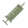

Reverse Aging,
생체시간을 되돌리는
토탈라이프스타일 케어
ONE'S CLINIC
누적 환자수
50,000+
월간 정기 내원 환자 수
500+
평균 진료 시간
30min
Scroll
그동안 없던 건강 솔루션
One's 는 기능의학을 기반으로, 건강을 유지하며 나이를 드러내는 과정을 늦추고자 합니다.
몸과 마음을 젋게 유지하며, 당신의 더 나은 내일을 만듭니다.
나를 가장 잘 아는 주치의
ONE'S CLINIC
원스는건강한 신체와 마인드의 밸런스를 통해 Reverse Aging (역노화) 을 추구합니다.
아픈곳을 가장 편하게 이야기 할 수 있고, 아프기 전에 건강을 먼저 챙길수 있는 공간에서
여러분의 주치의로서, 적은 수의 진료를 보더라도 더 좋은 치료를 제공할 것을 약속드립니다.
아픈곳을 가장 편하게 이야기 할 수 있고, 아프기 전에 건강을 먼저 챙길수 있는 공간에서
여러분의 주치의로서, 적은 수의 진료를 보더라도 더 좋은 치료를 제공할 것을 약속드립니다.
누적 환자 수
50,000 +
전문의 수
3
평균 진료 시간
30min
월간 정기 내원 환자 수
500 +
본질에 집중하는 치료
기능의학
건강 문제의 근본은, 우리 몸을 구성하는 '세포의 기능'에 있습니다.
One's Clinic은 기능의학을 추구하며 건강의 '본질'과 노화의 역행에 집중합니다.
질병의 원인 찾기
질병을 발견하고 치료하는 것은 물론, 그 질병이 '왜' 발생했는지 근본적 원인들을 찾아 개선하는 의학입니다.
세포 수준의 문제 해결
여러 원인들로 세포의 기능이 손상되면, 다양한 건강문제가 증상으로 발생합니다. ’기능의학은 겉으로 드러나는 '증상'만을 진단하고 치료하는데 그치지 않습니다. ’근본적인 '세포 수준의 문제'를 함께 파악하고 해결해 나갑니다.
원인 교정의 초점
질병과 수많은 건강상의 문제들은 유전적, 살아온 생활 습관들이 원인입니다. 현재 환자의 건강 상태를 자세히 파악하여 불균형을 찾아 교정하고 보충합니다.
근본을 해결하는 치료 프로그램
원스클리닉 토탈케어
대부분의 건강 문제는 노화, 비만, 면역의 영역 안에서 유기적으로 발생합니다.
One's Clinic은 이 모든 영역을 동시에 해결할 수 있는 토탈 치료솔루션을 제안합니다.

Reverse-Aging (역노화)
(다이어트)
(면역)